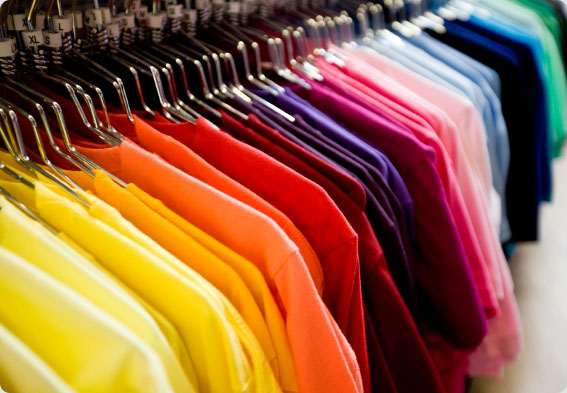

The fashion industry is one of the major polluting industries. It is known to be responsible for about 10% of the greenhouse gas emission worldwide (more carbon emissions than the aviation and shipping industries combined), but it is also under fire for polluting the ocean with microplastics. About 60% of clothing materials are made of plastics, including polyester, acrylic and nylon textiles. According to Tecnon Orbichem, a chemical data company, they predicted that the production of polyester would triple in amount per annum between 2007 and 2025. With a soaring demand, the amount of clothes disposed of increases significantly and negatively impacts the environment, where 85% of all these textiles will eventually end up in landfills every year. Research shows only 6% of textile wastes are recycled. This is especially worrying as the starting petroleum materials for synthetic polyesters is also a growingly finite resource. Singapore's small land area further spells out the urgency for a solution. Therefore, apparel companies are now expected and pressured into bearing the responsibility of lowering the environmental risks of such commercialised production processes. Singapore, acclimated to being the greenest city in Asia and the fourth greenest city of the world, does not readily offer a sustainable alternative for apparel yet.
Currently, millennial generations with purchasing power have high expectations and greatly favour businesses that operate sustainably. Spotting the current trend and with consideration to the local context, Lil Green Wear aims to cater this demand with the development of bioplastics and alternative options to replace the polyester content in apparel. It is the refreshment Singapore needs, starting with broadening the options available in the prevalent market that is apparels. Bioplastics are currently recognised as a key sustainable material in the 21st century by offering balance between environmental benefits and impact of plastics. Polyethylene 2,5-furandicarboxylate (PEF) is a polymer that highly resembles PET, which is one of the commonly used materials to manufacture fibers for clothing. Lil Green Wear aims to research a technology to produce bioplastic PEF. One of the main channels we aim to obtain our raw materials from, comes from food waste, from which only 17% was recycled in 2018. This is in line with Singapore's efforts in achieving the 3Rs, which can help us in securing positive support of customers and financial support of the government with a grant with regards to sustainability.
